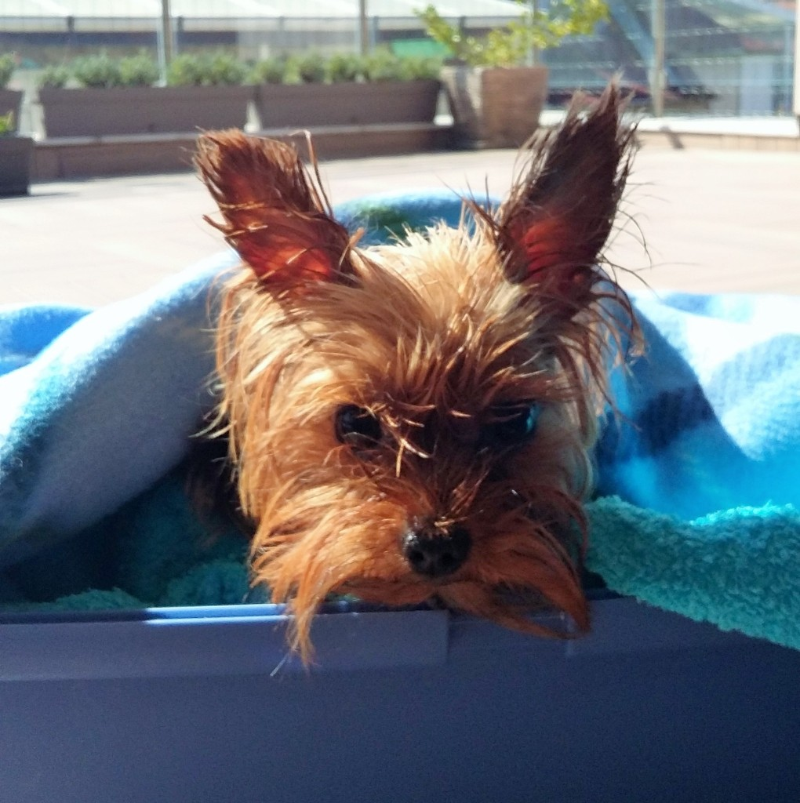

Дойде ли време за лятната отпуска, всички стопани на домашни любимци са поставени пред избора дали да пътуват със своя четириног приятел или да го оставят в специализиран хотел за животни.
Ваканцията с куче може да е много забавна и развлекателна за цялото семейство, стига да бъде планирана правилно и навреме.
Преди пътуване с кола е добре да не храните животното от предната вечер, както и да предвидите почивки на всеки 2-3 часа, за да се разходи и да пие вода. При пътуване със самолет се консултирайте с авиокомпанията за условията за превоз на домашни любимци в кабината и в багажното отделение. Ветеринарният лекар може да предпише леки успокоителни за по-неспокойните животни.
Международният паспорт на кучето е документът, който е необходим при пътуване в чужбина. За страните от ЕС в него трябва да са нанесени всички данни на стопанина и животното, номерът на микрочипа, ваксината против бяс, обезпаразитяванията против тения и ветеринарно-медицинският преглед, направен 24-48 часа преди пътуването. Държавите извън ЕС имат и други изисквания при внос на животни на тяхна територия, така че е добре да се информирате навреме, тъй като някои изследвания отнемат около месец.
Добре е да предупредите персонала където сте избрали да отседнете какви са породата и размерите на вашия любимец, както и да носите с вас пособията му за храна и вода, за да не се налага да използвате тези в хотела. Същото се отнася за одеяла и други аксесоари. Информирайте се дали във всички части на хотела се допускат кучета, защото много често това не важи за ресторанти и басейни.
Повечето кучета са свикнали да ядат определен вид храна, която е добре да не сменяте при пътуване, за да не се появят стомашно-чревни проблеми. Много често животните имат намален апетит през летните жеги, което не трябва да ви тревожи.
Хубаво е да вземете с вас малка аптечка с лекарства за първа помощ, списък с които ще получите при ветеринарния лекар.
Строго препоръчително е и третирането на животното с препарат против външни паразити, за да се избегнат пренасяните от тях заболявания, както и срещу дирофилария.
И, независимо дали сте в планината или на плажа, не забравяйте да намажете незащитените части като носа и ушите на кучето със слънцезащитен крем!
Приятна ваканция!